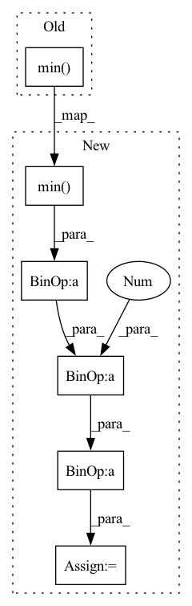

Pattern ID :7575
Before Change
points *= self.cfg.scale // Scale = 1/voxel_size
offset = np.clip(4096 - points.max(0) + points.min( 0) - 0.001, 0,
None) / 2
points += offsetAfter Change
points, feat, labels = self.augmenter.augment(
points, feat, labels, self.cfg.get("augment", None))
m = points.min( 0)
M = points.max(0)
// Randomly place pointcloud in 4096 size grid.
grid_size = self.cfg.grid_size
offset = -m + np.clip(
grid_size - M + m - 0.001, 0, None) * np.random.rand(3) + np.clip(
grid_size - M + m + 0.001 , None, 0) * np.random.rand(3)
points += offset
idxs = (points.min(1) >= 0) * (points.max(1) < 4096)In pattern: SUPERPATTERN
Frequency: 3
Non-data size: 6
Instances Fragment ID: 25260839
Project Name: isl-org/open3d-ml
Commit Name: 67123f7e9d5dbbe6a73c42ef648093a7d25ace4a
Time: 2021-05-11
Author: sanskaragrawal107@gmail.com
File Name: ml3d/tf/models/sparseconvnet.py
M Class Name: SparseConvUnet
N Class Name: SparseConvUnet
M Method Name: preprocess(3)
N Method Name: preprocess(3)
M Parent Class: BaseModel
N Parent Class: BaseModel
M File Name: ml3d/tf/models/sparseconvnet.py
N File Name: ml3d/tf/models/sparseconvnet.py
M Start Line: 64
M End Line: 78
N Start Line: 97
N End Line: 124
Before Change
if printable:
print("******************************************************")
print(target.shape, target.mean().item(), target.max().item(), target.min().item())
print(prediction.shape, prediction.mean().item(), prediction.max().item(), prediction.min() .item())
print("******************************************************")
//calculAfter Change
//mask2 = prediction > 0
// print(mask2.type(torch.float32).mean())
prediction = (prediction - prediction.min()) / (prediction.max() - prediction.min() + 1e-8 )
//prediction[mask2] = 10. / prediction[mask2]
//prediction[~mask2] = 0.
Fragment ID: 25260840
Project Name: antocad/focusondepth
Commit Name: 6c33c5957c996f4015e46dd90048624e1b019574
Time: 2021-12-30
Author: antoine.cadiou@icloud.com
File Name: FOD/Loss.py
M Class Name: ScaleAndShiftInvariantLoss
N Class Name: ScaleAndShiftInvariantLoss
M Method Name: forward(3)
N Method Name: forward(4)
M Parent Class: nn.Module
N Parent Class: nn.Module
M File Name: FOD/Loss.py
N File Name: FOD/Loss.py
M Start Line: 125
M End Line: 148
N Start Line: 136
N End Line: 136
Before Change
"TEST air_passengers.csv",
)
df = pd.read_csv(AIR_FILE)
print(df["y"].min() )
print(df["y"].mean())
print(df["y"].max())
df["y"] = df["y"].add(2 * df["y"].max()).div(3 * df["y"].max())After Change
"TEST air_passengers.csv",
)
df = pd.read_csv(AIR_FILE)
min = df["y"].min()
max = df["y"].max()
q = df["y"].quantile(0.9)
// w = max - min
w = q - min
shift = min - 0.125 * w
scale = 1.25 * w
df["y"] = df["y"].sub(shift).div(scale) Fragment ID: 25260843
Project Name: ourownstory/neural_prophet
Commit Name: 31384e7e32de4aa38ac319528ebacac026bb0746
Time: 2020-11-05
Author: ourownstory@users.noreply.github.com
File Name: tests/test_integration.py
M Class Name: IntegrationTests
N Class Name: IntegrationTests
M Method Name: test_air_data(1)
N Method Name: test_air_data(1)
M Parent Class: unittest.TestCase
N Parent Class: unittest.TestCase
M File Name: tests/test_integration.py
N File Name: tests/test_integration.py
M Start Line: 348
M End Line: 367
N Start Line: 348
N End Line: 357